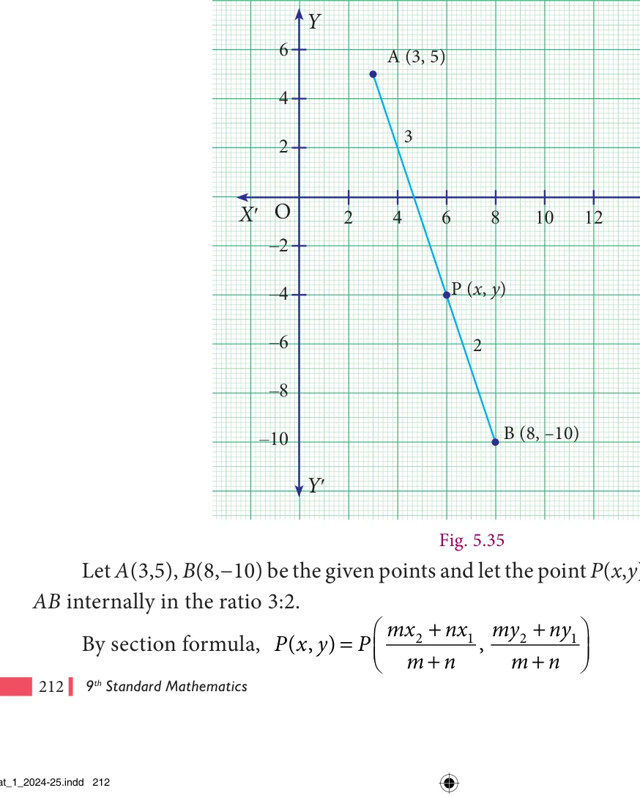
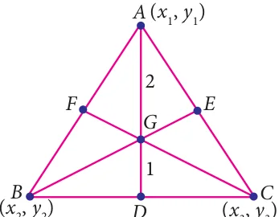

We studied bisection and trisection of a given line segment. These are only particular cases of the general problem of dividing a line segment joining two points \((x_1, y_1)\) and \((x_2, y_2)\) in the ratio \(m : n\).
Given a segment AB and a positive real number r.
We wish to find the coordinate of point P which divides AB in the ratio r :1. This means \(\frac{AP}{PB} = \frac{r}{1}\) or \(AP =r(PB)\).
This means that \(x - x_1 = r(x_2 - x)\) Solving this, \(x = \frac{rx_2 + x_1}{r + 1}\) ….. (1) We can use this result for points on a line to the general case as follows.

\(\left(\frac{mx_2 + nx_1}{m+n}, \frac{my_2 + ny_1}{m+n}\right)\) If r is taken as \(\frac{m}{n}\) , then the section formula is + , + , which is the
standard form.
Note
- The line joining the points \((x_1, y_1)\) and \((x_2, y_2)\) is divided by the \(x\)-axis in the ratio \(\frac{-y_1}{y_2}\) and by the \(y\)-axis in the ratio \(\frac{-x_1}{x_2}\).
- If three points are collinear, then one of the points divides the line segment joining the other two points in the ratio \(r : 1\).
- Remember that the section formula can be used only when the given three points are collinear.
- This formula is helpful to find the centroid, incenter and excenters of a triangle. It has applications in physics too; it helps to find the center of mass of systems, equilibrium points and many more.
Example 5.17
Find the coordinates of the point which divides the line segment joining the points (3,5) and \((8, -10)\) internally in the ratio 3:2.
Solution

Here \(x_1 = 3\), \(y_1 = 5\), \(x_2 = 8\), \(y_2 = -10\) and \(m = 3\), \(n = 2\) Therefore P(x, y) \(= P\) 3 8( 3)++ 22(3), \(3( -\) 103+)+22(5) \(= P\) 245+ 6 , - 305+10 \(= P(6\), \(- 4)\)

joining A\((-3, 5)\) and B internally in the ratio 1:6?
Solution
Let A\((-3, 5)\) and \(B(x_2, y_2)\) be the given two points.
Given P\((-2, 3)\) divides AB internally in the ratio 1:6.
\(P\left(\frac{mx_2 + nx_1}{m+n}, \frac{my_2 + ny_1}{m+n}\right)\)
By section formula, P \(m + n\) , \(m + n\) = P\((-2, 3)\)
\(P\left(\frac{x_2 + 6(-3)}{7}, \frac{y_2 + 6(5)}{7}\right) = P(-2, 3)\)
Equating the coordinates

Therefore, the coordinate of B is ( , - )

- Find the coordinates of the point which divides the line segment joining the points A\((4, -3)\) and B(9,7) in the ratio 3:2.
- In what ratio does the point P\((2, -5)\) divide the line segment joining A\(- 3 5\), ) and B\((4, -9)\) .
- Find the coordinates of a point P on the line segment joining A(1 2, ) and B(6,7) in such a way that \(AP = \frac{2}{5} AB\).
- Find the coordinates of the points of trisection of the line segment joining the points A\(- 5 6\), ) and B\((4, -3)\).
- The line segment joining A(6,3) and B\((-1, -4)\) is doubled in length by adding half of AB to each end. Find the coordinates of the new end points.
- Using section formula, show that the points A\((7, -5)\), B\((9, -3)\) and C(13,1) are collinear.
- A line segment AB is increased along its length by 25% by producing it to C on the
side of B. If A and B have the coordinates \((-2, -3)\) and (2 1, ) respectively, then find the coordinates of C.
5.7 The Coordinates of the Centroid

Consider \(a \triangle ABC\) whose vertices are \(A(x_1, y_1)\), \(B(x_2, y_2)\) and \(C(x_3, y_3)\).
Let AD, BE and CF be the medians of the \(\triangle ABC\) .
\(\frac{x_2 + x_3}{2}, \frac{y_2 + y_3}{2}\)
The mid-point of BC is D 2 , 2
Fig. 5.37